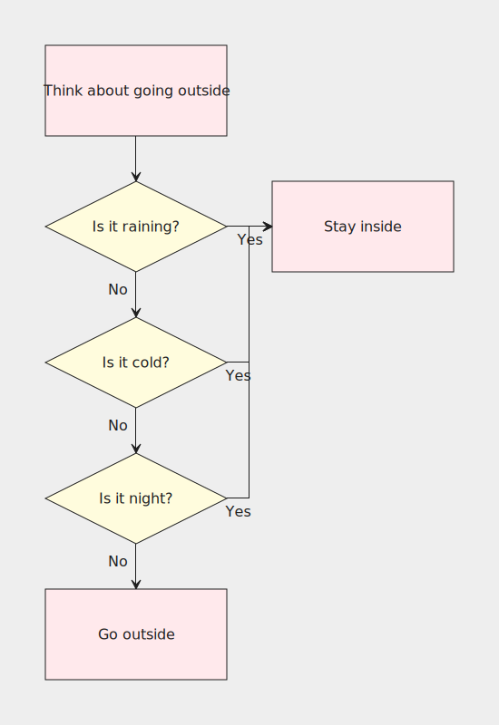
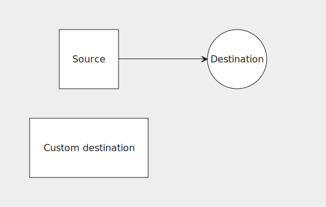
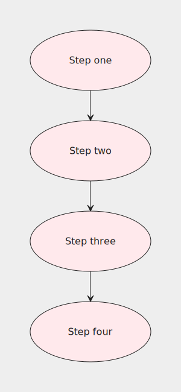

Using a define block
Let's take a look at the following flowchart:
grid {
block("Think about going outside", class: "pink", connect: s:n@s);
condition("Is it raining?", shape: diamond, class: "yellow", connect: { s:n@s("No"); e:w#stay("Yes") }), block#stay("Stay inside", class: "pink");
condition("Is it cold?", shape: diamond, class: "yellow", connect: { s:n@s("No"); e:w#stay("Yes") });
condition("Is it night?", shape: diamond, class: "yellow", connect: { s:n@s("No"); e:w#stay("Yes") });
block("Go outside", class: "pink");
}

This flowchart has lots of repetition going on, which means:
- It's harder to read
- If you want to change something, you need to change it in multiple places
- Long lines make it hard to figure out how many columns there are in a row
We can rewrite the example like so:
grid {
block("Think about going outside", connect: s:n@s);
condition("Is it raining?"), block#stay("Stay inside");
condition("Is it cold?");
condition("Is it night?");
block("Go outside");
}
define {
block(class: "pink");
condition(shape: diamond, class: "yellow", connect: {
s:n@s("No");
e:w#stay("Yes");
});
}
Definitions are a mechanism for reusing common attributes. They belong in the optional define block and are separated by semicolons. They are specified in the same way as nodes in grid, with one exception being that labels can't be attached to identifiers. Attributes specified for an identifier in define will apply to all nodes with the same identifier in grid.
Apart from using the define block to put shared attributes in one place, a valid use-case could also be putting a node's long list of attributes in define so as to reduce clutter in grid, making it more readable.
It can also be convenient to put the connect attribute in define if there are multiple connections so that they can be spread across multiple lines for improved readability like in the example above. The same could be done in grid, though it's generally not a good idea since it makes it harder to tell how many rows the grid has.
Overwriting
If a node has the same attribute defined in grid and in define, the value in grid will overwrite the one in define:
grid {
src("Source", connect: e:w@e), dest;
dest("Custom destination", shape: rect);
}
define {
src(shape: square, connect: {s:n@s, e:w@e});
dest("Destination", shape: circle);
}

As an example of where this can come in handy, say we wanted all block nodes connect to the node below them except for the last one. This can be achieved by overriding its connect to an empty list:
grid {
block("Step one");
block("Step two");
block("Step three");
block("Step four", connect: {});
}
define {
block(shape: ellipse, class: "pink", connect: s:n@s);
}
